Glass / 2022
Woven Vessels
Candone Wharton
Cast lead crystal vessels molded from the artist's earthenware originals.
Rubber molds were taken from Candone Wharton's earthenware sculptures and translated into cast lead crystal, carrying the woven surface of the original into a transparent material.
Details
- Year
2022 - Location
Chicago, IL - Category
Glass - Materials
Lead crystal
Credits
- Artist: Candone Wharton
- Glass: Ally Reza
Index
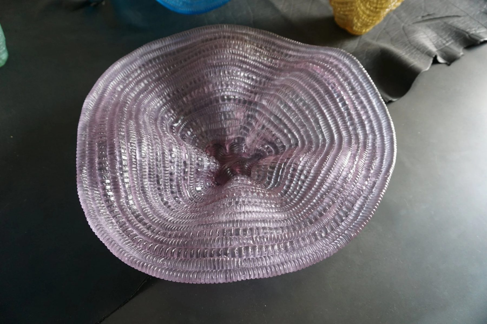
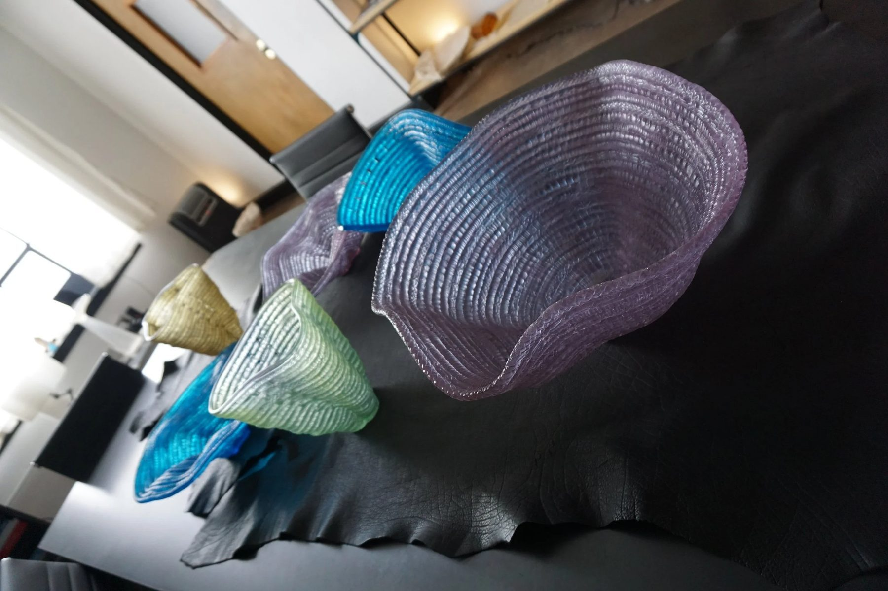
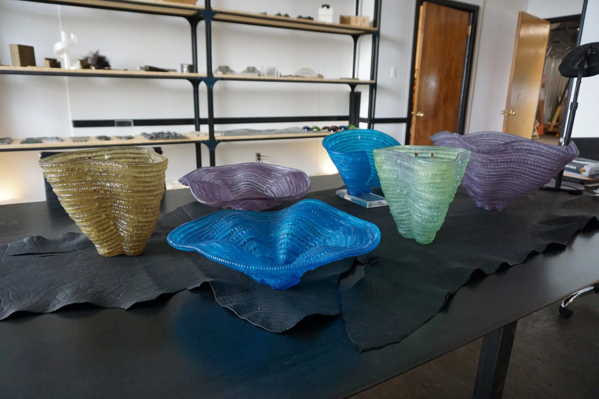
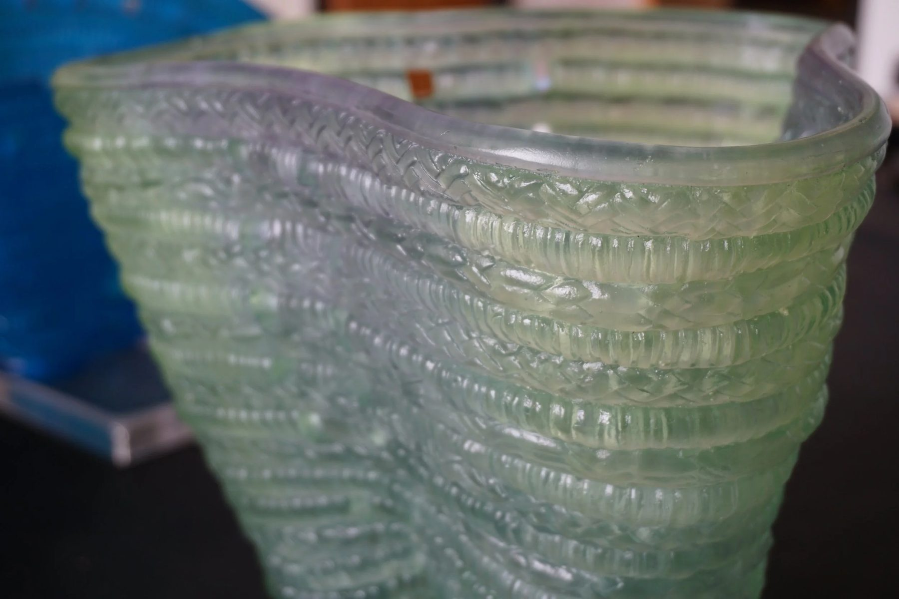
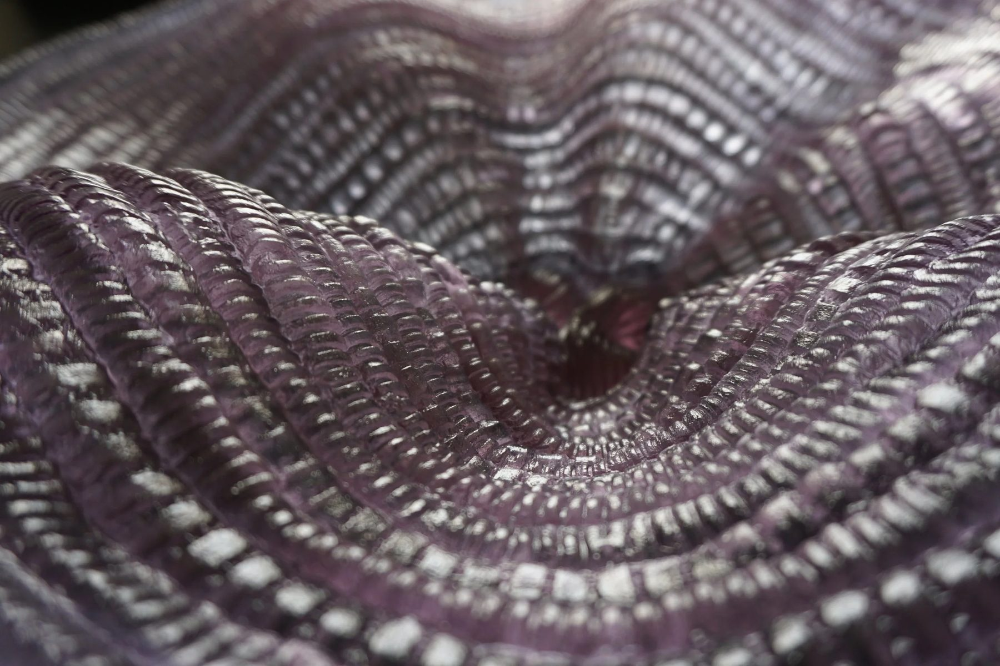
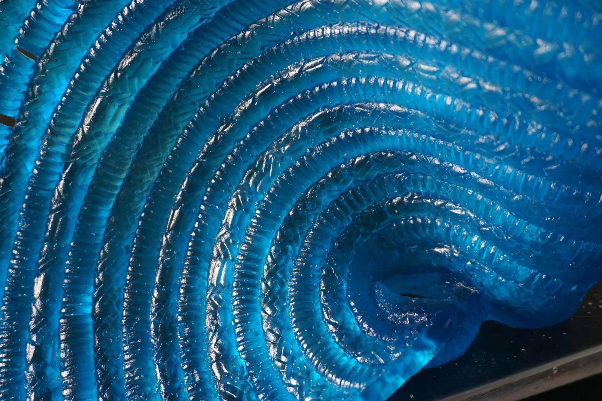
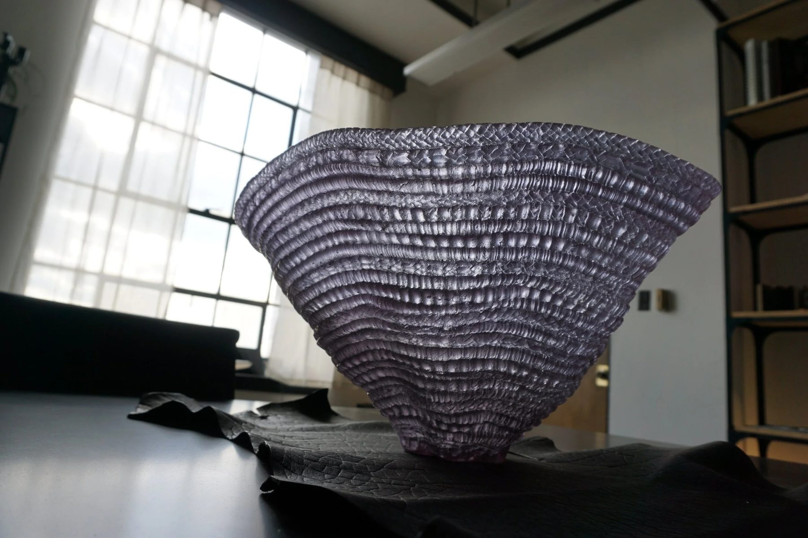
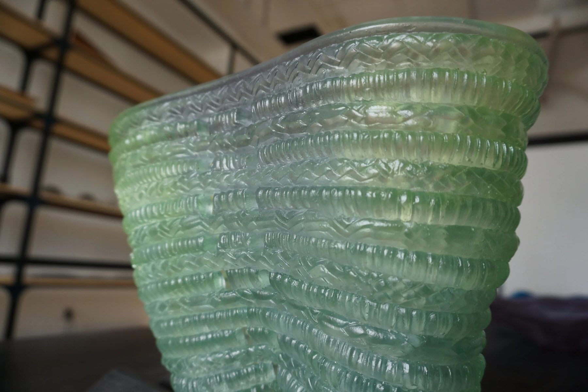
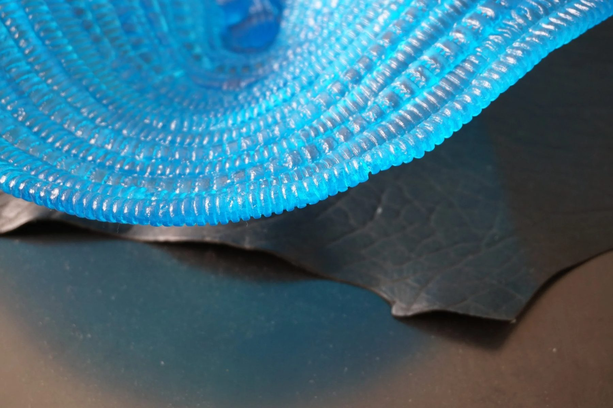
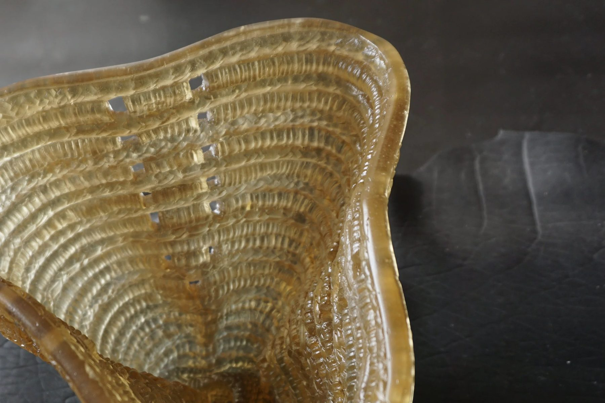
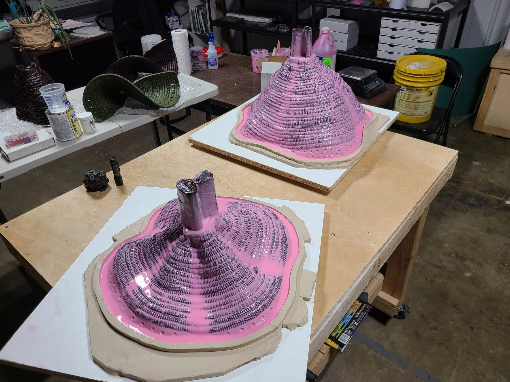